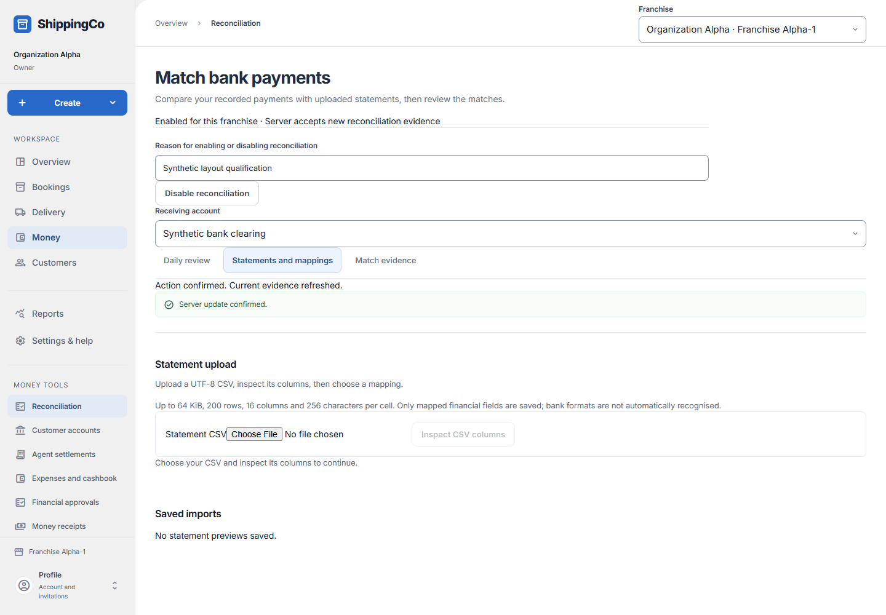
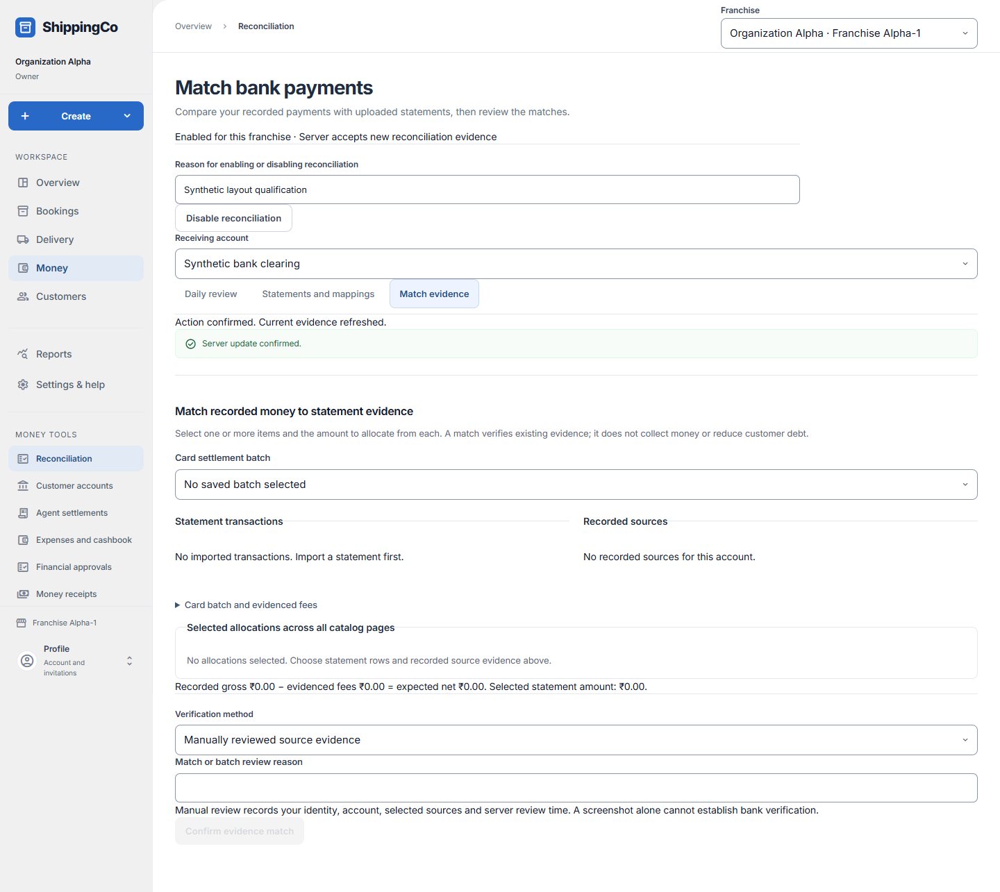
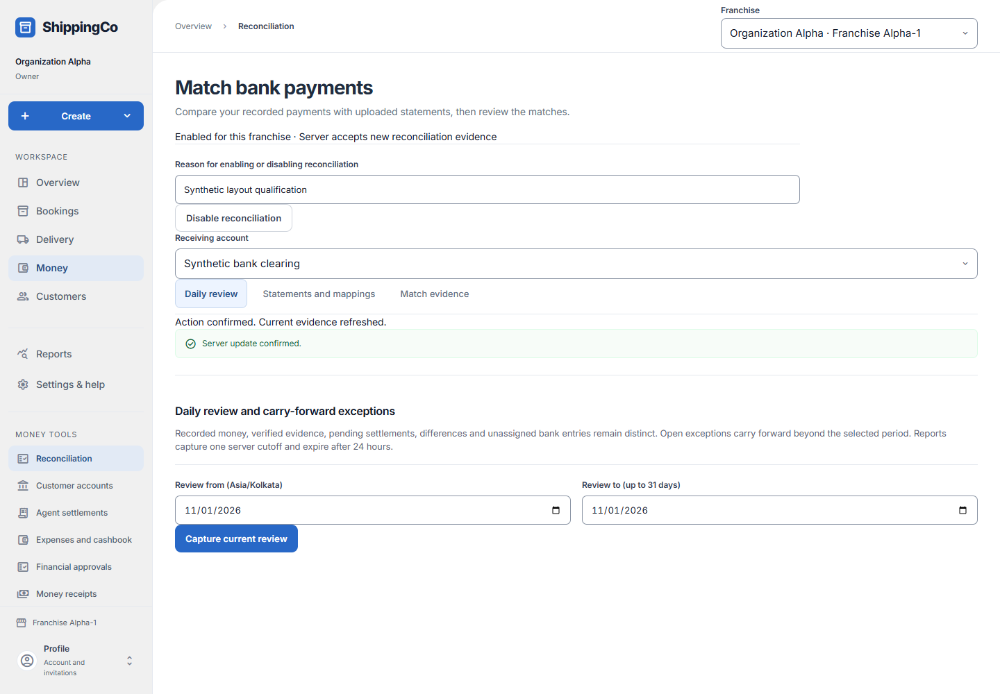

Checking bank records
What this helps you do
- Compare imported bank transactions with payments already recorded in the app.
Open this feature
- Money > Reconciliation.
- Check the active branch first. Available actions depend on your role and the selected record.



Upload, inspect and map
- Select receiving account and open Statements and mappings. Choose Statement CSV, then Inspect CSV columns. Mapping and period controls appear after inspection.
- CSV must be UTF-8: at most 64 KiB, 200 rows, 16 columns and 256 characters per cell. Bank formats are not automatically recognised.
- Choose Statement mapping version. An administrator can Create a mapping or Revise this mapping using a clear name, stable uppercase source namespace, date column/format and amount layout/unit.
- Map a signed amount and positive direction, separate credit/debit columns, or amount plus direction and exact credit/debit values. Reference, verified unique transaction ID and currency columns are optional; absent currency means INR. Leave ID blank unless uniqueness is verified.
- Save mapping version. Enter the inclusive statement period dates and Validate and save preview.
Review and import
- Open the saved import. Check row date, direction, amount, reference, validation and outcome. Import next rows processes at most 20 at a time.
- Resolve ambiguous rows: reject, confirm distinct or link a verified existing transaction when offered. Conflicts may allow rejection only. Enter a review reason of at least three characters and select the existing transaction for duplicates.
- Check processed and needs-review totals. Importing stores statement evidence, not new customer receipts.
Match evidence
- Select statement transactions and recorded sources for the selected account. Review individual allocation amounts; selections survive catalogue pagination.
- For card work select a saved settlement batch or supply settlement reference and expected settlement date for the relevant batch action.
- Choose manual verification or strict unique account, currency, reference and full-amount matching. Enter Match or batch review reason. Check gross, fees, net and selected statement totals before Confirm evidence match. Suggestions still need review.
Daily review
- Choose Review from and Review to within 31 days, then Capture current review. Filter Evidence status after capture.
- Open an evidence row and enter Evidence review reason. Choose Bank entry classification or Discrepancy type for the relevant action. Inspect match and unmatch history before resolving a difference.
- Classification and resolution do not change recorded money or create sales. A screenshot alone does not verify a bank payment.
Fields and when to use them
These fields belong to the actions above. Complete the fields for your selected action; optional filters may stay blank.
- Statement mapping version: Select the statement mapping version appropriate to the action explained above. Use when shown for the selected action.
- Statement period from (Asia/Kolkata): Enter the statement period from (asia/kolkata) for this action, using the time zone shown. Required when this field is shown.
- Statement period to (inclusive): Enter the statement period to (inclusive) for this action, using the time zone shown. Required when this field is shown.
- Mapping name: Enter a short, clear name that your staff will recognise. Required when this field is shown.
- Source identity namespace: A stable uppercase name for the bank statement source. Keep it the same for later imports. Required when this field is shown.
- Date format: Enter the date format for this action, using the time zone shown. Use when shown for the selected action.
- Amount layout: How the statement file separates money in and money out. Use when shown for the selected action.
- Amount unit: Whether the statement file stores amounts in rupees or paise. Use when shown for the selected action.
- Positive amounts represent: Choose whether a positive number means money in or money out. Use when shown for the selected action.
- Exact credit value: The exact text in the file that means money came in. Use when shown for the selected action.
- Exact debit value: The exact text in the file that means money went out. Use when shown for the selected action.
- Card settlement batch: Choose the matching saved record. Check the customer and amount before continuing. Use when shown for the selected action.
- Settlement reference: Use the reference from the matching saved record or real supporting document. Do not invent one. Use when shown for the selected action.
- Expected settlement date (Asia/Kolkata): Enter the expected settlement date (asia/kolkata) for this action, using the time zone shown. Use when shown for the selected action.
- Verification method: Choose how the money was paid or checked. Use the option that actually applies. Use when shown for the selected action.
- Match or batch review reason: Explain why you are making this request or change. Use the real business reason. Required when this field is shown.
- Review from (Asia/Kolkata): Enter the review from (asia/kolkata) for this action, using the time zone shown. Required when this field is shown.
- Review to (up to 31 days): Enter the review to (up to 31 days) for this action, using the time zone shown. Required when this field is shown.
- Evidence status: Choose the state or decision that matches the record you have reviewed. Use when shown for the selected action.
- Evidence review reason: Explain why you are making this request or change. Use the real business reason. Use when shown for the selected action.
- Bank entry classification: Select the bank entry classification appropriate to the action explained above. Use when shown for the selected action.
- Discrepancy type: Select the discrepancy type appropriate to the action explained above. Use when shown for the selected action.
- Date column: Choose the matching column from the uploaded statement file. Required
- Amount column: Choose the matching column from the uploaded statement file. For one-amount layouts
- Credit column / Debit column: Choose the matching column from the uploaded statement file. For separate credit and debit amounts
- Direction column: Choose the matching column from the uploaded statement file. For amount plus direction layout
- External reference column: Choose the matching column from the uploaded statement file. Optional
- Proven unique transaction ID column: Choose the matching column from the uploaded statement file. Optional; use only a verified unique ID
- Currency column (otherwise INR): Choose the matching column from the uploaded statement file. Optional; omitted means INR
- Row identity decision: Reject the row, confirm it is distinct, or link it to the same saved transaction. Only available decisions are shown. For rows needing review
- Row existing transaction: The saved transaction that this duplicate row refers to. For a duplicate decision
- Row review reason: Explain how you checked the row. Required for a row decision
If you need to retry
- No records: check branch, account or customer and filters. Use Load more where offered before deciding a record is missing.
- Invalid or missing value: read the form message, correct the draft, then review amounts and references again.
- Uncertain save: use the offered retry for the same request. Do not create a second payment, return, expense or application to guess whether the first saved.
- Changed evidence or policy: refresh current records and review them before a new request. A saved report retains its captured figures; create another report for current results.
About this guide
Checked against the current screen code on 1 November 2026. This explains app behaviour, not tax or accounting advice. Buttons and records can differ by role.